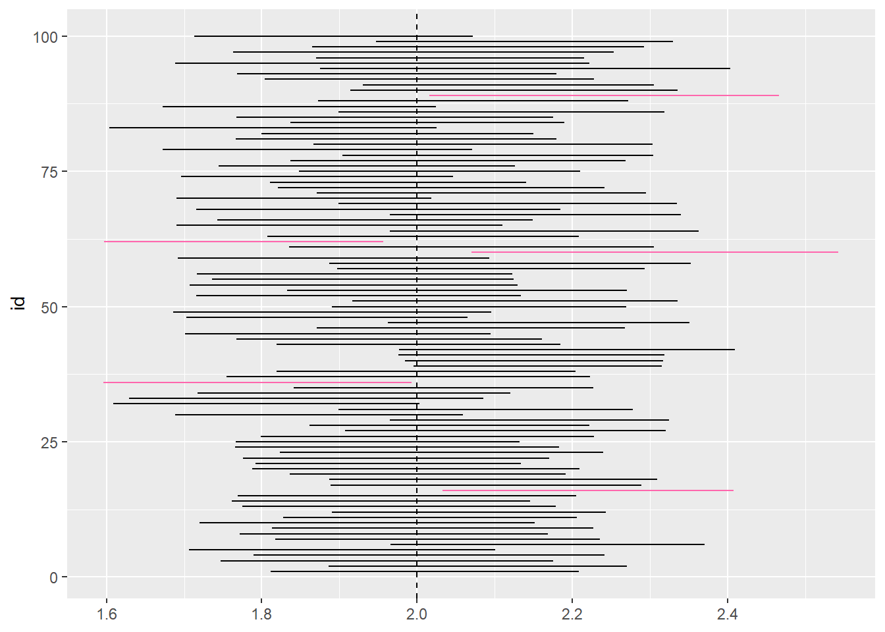

\(\require{color}\definecolor{teall}{RGB}{58, 171, 174} \definecolor{bluemoon}{RGB}{62, 71, 125}\definecolor{gween}{RGB}{73, 175, 129}\)
When analyzing different models, we often want to compare a small model to a larger one. One way of doing this is by comparing the RSS of the two models. In linear regression, the goal is to minimize the RSS and establish a model of the fewest explanatory variables. So if \(\small{{RSS}_{\mathrm{small}}-{RSS}_{\mathrm{large}}}\) is small, then the fit of the small model is almost as good as the larger one.
\[ \begin{align} \mathbf{H_0}&: \beta_1 = \beta_2 = {\ldots} = \beta_p = 0 \\ \mathbf{H_A}&: \small\text{the models are not equal} \end{align} \]
F-Statistic. Next, we create an F-Statistic, which lets us associate models to the F-distribution. When comparing two linear regression models, we use the F-test to compare a small model to a large model. A fundamental part of the F test is the residual sum of squares, so it’s essential to know how to get the RSS and its expected value. Based on the hypothesis testing, we can determine whether or not to reject our null hypothesis (two models are different).
\[ \begin{align} \mathrm{\large F} &\equiv \dfrac{{RSS}_{\mathrm{\small small}} - {RSS}_{\mathrm{\small larger}} / ({df}_{\mathrm{\small small}} - {df}_{\mathrm{\small larger}})} {{RSS}_{\mathrm{\small larger}} / {df}_{\mathrm{\small larger}}} \\ & \sim \large{\mathrm{\Large F}}_{{df}_{\mathrm{\small small}} - {df}_{\mathrm{\small larger}}, \, {df}_{\mathrm{\small larger}}} \end{align} \]
F-tests are set frameworks that use the f-distribution and are excellent for executing hypothesis testing. Such a hypothesis test allows us to compare a small model to a large model, i.e., check if the small model is just as good as the large model. Overall, we can use the F test to find a reasonable cut-off for our hypothesis test to determine whether we can reject our null hypothesis that the models are the same.
We use the Hitters’ dataset in the following examples, which holds data on Major League Baseball from the 1986 and 1987 seasons.
library(ISLR)
hitters_cc <- Hitters[complete.cases(Hitters), ]
1. Predict Salary from the variables AtBat and Hits in the provided dataset.
We want to construct a linear regression model to estimate Salary using the explanatory variables AtBat and Hits. Before we do this, we want to have a smaller model to compare, such as an intercept-only model—the following outlines how to create both such models.
small <- lm(Salary ~ 1, data = hitters_cc)
larger <- lm(Salary ~ AtBat + Hits, data = hitters_cc)Next, we implement the F-test to determine whether the model is better than an intercept-only model. There are two methods in finding the F-statistic:
a. Method 1. Calculate it numerically:
\[ \small\mathrm{\large F} \equiv \dfrac{{RSS}_{\mathrm{\small small}} - {RSS}_{\mathrm{\small larger}} / ({df}_{\mathrm{\small small}} - {df}_{\mathrm{\small larger}})} {{RSS}_{\mathrm{\small larger}} / {df}_{\mathrm{\small larger}}} \]
We can get the RSS values for both models as follows:
rss_small <- summary(small)$sigma^2 * (nrow(hitters_cc) - 1)
rss_larger <- summary(larger)$sigma^2 * (nrow(hitters_cc) - 3)Now, we calculate the F-statistic and p-value as follows:
f <- ((rss_small - rss_larger) / 2) /
(rss_larger / (nrow(hitters_cc) - 3))
Pr_f <- 1 - pf(f, 2, nrow(hitters_cc) - 3)
b. Method 2. Call the anova table:
a <- anova(small,larger)| Res.Df | RSS | Df | Sum of Sq | F | Pr(>F) | |
|---|---|---|---|---|---|---|
| Model 1: Salary ~ 1 | 262 | 53319113 | NA | NA | NA | NA |
| Model 2: Salary ~ AtBat + Hits | 260 | 42463750 | 2 | 10855363 | 33.23299 | 0 |
2. Find if the Hits variable is an important contribution to the model.
Here, we’re testing for the significance of one variable, i.e., whether the explanatory variable Hits is significant in estimating Salary.
\[ H_0: \beta_2 = 0 \\ H_A: \beta_2 \neq 0 \]
a. Anova Table.
Here, we assign our smaller model as the one excluding the explanatory variable Hits.
small <- lm(Salary ~ AtBat, data = hitters_cc)
larger <- lm(Salary ~ AtBat + Hits, data = hitters_cc)
a <- anova(small, larger)| Res.Df | RSS | Df | Sum of Sq | F | Pr(>F) | |
|---|---|---|---|---|---|---|
| Model 1: Salary ~ AtBat | 261 | 45009644 | NA | NA | NA | NA |
| Model 2: Salary ~ AtBat + Hits | 260 | 42463750 | 1 | 2545894 | 15.58818 | 0.0001014 |
b. Summary Table.
The following uses the R Stats summary function to display the summary statistics of the fitted linear model containing both explanatory variables Hits and AtBar for estimating Salary.
summary(larger)| term | estimate | std.error | statistic | p.value |
|---|---|---|---|---|
| (Intercept) | 141.271976 | 76.5526204 | 1.845423 | 0.0661130 |
| AtBat | -1.215996 | 0.6371521 | -1.908486 | 0.0574296 |
| Hits | 8.211915 | 2.0799208 | 3.948186 | 0.0001014 |
The summary statistics gives a p-value of \(\small 1.405 \times 10^{-13}\) for the larger model. In other words, the probability of getting a statistic as extreme or more extreme than the observed test statistic, given the null hypothesis is true.
Definition. If we use the same sampling method to select different samples and computed an interval estimate for each sample, we would expect the true population parameter (\(\beta_1\)) to fall within the interval estimates \(95\%\) of the time.
\[\Large\hat\beta\pm t^*SE_{\hat\beta}\]
Confidence intervals are a way to quantify our uncertainty. The confidence interval takes the \(\hat \beta\) from our least squares estimation \(\pm\) \(t^*\), which comes from our t-distribution, multiplied by the standard error of \(\hat \beta\).
Suppose we select a different sample of size \(\mathcal{n}\) from the same population and compute \(\mathcal{n}\) new interval estimates. Each one of those \(\mathcal{n}\) interval estimates would be different. We would expect that \(\small 95\%\) of those \(\mathcal{n}\) would contain the true population parameter for that \(\beta\) coefficient.
In the following example, we are interested in illustrating the relationship between Age and Wage such that Age \(\small{\small \approx \text{ Normal} (30,10)}\), \(\small{\epsilon \approx \text{ Normal}(0,10)}\), and \(\small{\text{sample } {n}=100}\).
\[ \large \underbrace{\text{wage} = {\color{teal}{\bf \beta_1}} \times \text{age} + \epsilon}_{\begin{matrix}{\bf \beta_1} \; \Rightarrow \; \text{true parameter for} \\ \text{ the relationship between} \\ \text{variables age and wage}.\end{matrix}} \]
1. Run a simulation to generate \(\small 100\) confidence intervals by sampling from a “true” population.
a. Generate Two Different Samples:
In the following, we generate a sample of \(\small 100\). The set.seed() function makes it so that the method produces the same answer, and the rnorm function pulls a random normal variable.
# Sample 1
set.seed(7)
n <- 100 ## sample 100 people
sample <- data.frame(Age = rnorm(n, mean = 30, sd = 10))
sample$Wage <- 2 * sample$Age + rnorm(n, mean = 0, sd = 10)# Sample 2
n <- 100
sample2 <- data.frame(Age = rnorm(n, mean = 30, sd = 10))
sample2$Wage <- 2 * sample2$Age + rnorm(n, 0, 10)
b. Fit linear models:
Next, we use the lm function to fit two linear models using the two different samples we generated above.
Model1 <- lm(Wage ~ Age, data = sample) ## Sample 1
Model2 <- lm(Wage ~ Age, data = sample2) ## Sample 2
c. Compute the confidence intervals:
The following uses the confint function to compute the confidence intervals of one or more parameters for each of the fitted models. We then compare the confidence intervals to the “true parameter.”
confint(Model1)
confint(Model2)| 2.5 % | 97.5 % | |
|---|---|---|
| (Intercept) | -5.513397 | 7.503540 |
| Age | 1.811456 | 2.208256 |
| 2.5 % | 97.5 % | |
|---|---|---|
| (Intercept) | -8.880926 | 3.241064 |
| Age | 1.885782 | 2.270270 |
For Model \(1\), the confidence interval is \(\small{\color{bluemoon} 95 \% \; \mathrm{CI}:} \left(1.81, 2.21 \right)\). Our true parameter is \(\small{2}\), which is a fixed number that falls within this above confidence interval estimate. Hence, sample \(\small 1\) accurately captures an interval that contains the true parameter \(\small {2}\).
For Model \(2\), the confidence interval is \(\small{\color{bluemoon} 95 \% \; \mathrm{CI}:} \left(1.89, 2.27 \right)\). Our true parameter is \(\small{2}\), which is a fixed number that falls within this above confidence interval estimate. Hence, sample \(\small 2\) accurately captures an interval that contains the true parameter \(\small {2}\).
d. Generate 100 Confidence Intervals:
Here, we create the get_ci function to generate a random sample, fit a model predicting the relationship between Wage and Age, and return the confidence interval for the model. We then use the purrr package to run this simulation to generate 100 confidence intervals by sampling from a “true” population.
get_ci <- function(id) {
sample <- data.frame(Age = rnorm(n, mean = 30, sd = 10))
sample$Wage <- 2* sample$Age + rnorm(n, 0, 10)
model <- lm(Wage ~ Age, data = sample)
return(
data.frame(
lb = confint(model)[2,1],
ub = confint(model)[2,2],
id = id
))}
set.seed(7)
ci <- map_df(1:100, get_ci) ## map function call 100 times
e. Plot the 100 Confidence Intervals:
In the following code, we use the ggplot function to plot 100 simulated intervals from above.
ggplot(ci, aes(y = id, color = (lb > 2 | ub < 2))) +
geom_linerange(aes(xmin = lb, xmax = ub)) +
geom_vline(xintercept = 2, lty=2) +
scale_color_manual(values = c("black", "#ff66ad")) +
theme(legend.position = "none")
In the above exercise, we’re selecting 100 different samples and computing each of their interval estimates in order to get an approximation as close to the true population parameter. The figure we created above plots 100 simulated intervals represented by horizontal lines where the black lines represent the intervals that contain the true parameter \(\small{2}\) and the red lines represent the intervals that do not contain the true parameter. From the figure, we can calculate the percent of the intervals that contain the true parameter \(\small{2}\) by dividing all of the black lines by the total number of lines: \(\tfrac{95}{100}=95\texttt{%}\).